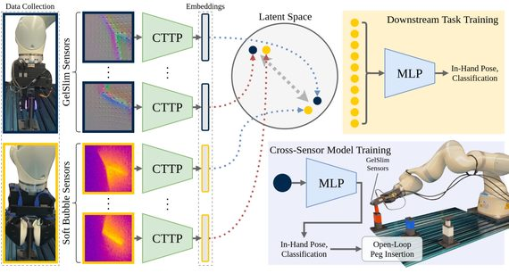
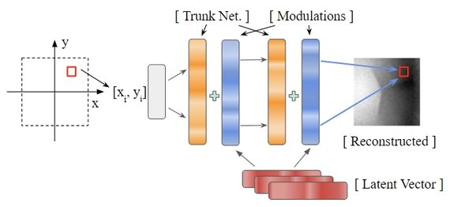
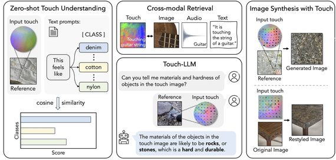
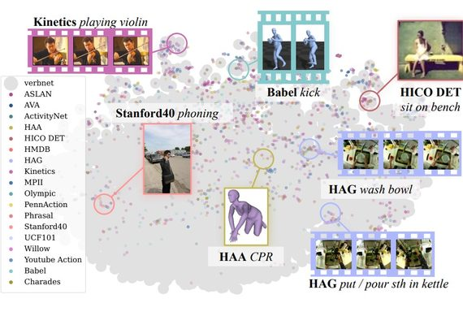

Dexterity from Supervised Play
arXiv 2026
We achieve dexterous manipulation from minutes of play data.
I'm a 4th-year Ph.D. student at Cornell Tech, advised by Prof. Andrew Owens. I also collaborate closely with Prof. Antonio Loquercio and Prof. Nima Fazeli.
I'm currently a research intern at Amazon FAR, working with Prof. Ruoshi Liu.
I received my M.S.E. from the University of Michigan in 2025, before transferring to Cornell. Prior to that, I received my B.Eng. and B.Ec. from Shanghai Jiao Tong University in 2023, with an honors degree from Zhiyuan College. During my undergrad, I worked with Prof. Ruohan Gao and Prof. Jiajun Wu at Stanford, and Prof. Yong-Lu Li and Prof. Cewu Lu at SJTU.
I mainly work on multisensory learning and robotic manipulation.
Humans perceive the world with multiple senses, based on which we establish abstract concepts to understand it. From the concepts we develop logical reasoning ability, and thus creating brilliant achievements. Inspired by this, my dream is to design human-like multisensory intelligent systems, which can be divided into four specific problems:
(* indicates equal contribution)
arXiv 2026
We achieve dexterous manipulation from minutes of play data.
CoRL 2025 (Oral)
We learn to translate touch signals captured from one touch sensor to another, which allows us to transfer object manipulation policies between sensors.
CVPR 2025
We make 3D scene reconstruction interactive by predicting the sounds of human hands physically interacting with the scene.

ICRA 2025
We learn a unified representation that captures the shared information between different tactile sensors using contrastive learning.

ICRA 2025
We introduce a novel implicit function representation for tactile signals, which improves the efficiency and generalization of tactile signals.
arXiv 2024
We learn to translate touch signals captured from one touch sensor to another, which allows us to transfer object manipulation policies between sensors.
CVPR 2024
We present a visuo-tactile 3D scene representation that can estimate the visual and tactile signals for a given 3D position within the scene.

CVPR 2024
We introduce UniTouch, a unified tactile representation for vision-based touch sensors connected to multiple modalities, including vision, language, and sound.

CVPR 2024 (Highlight)
We design a structured action semantic space given verb taxonomy hierarchy and align the classes of previous datasets to it.
CVPR 2023
paperproject pagecodeinteractive demovideo
We introduce a benchmark suite for multisensory object-centric learning with sight, sound, and touch. We also introduce a dataset including the multisensory measurements for real-world objects
Applied Scientist Intern
2026.06 ~ PresentSan Francisco, U.S.
Mentor: Prof. Ruoshi Liu
Ph.D. Student in Computer Science
2025.08 ~ PresentNew York, U.S.
Advisor: Prof. Andrew Owens
M.S.E. in Computer Science and Engineering
2023.08 ~ 2025.08Ann Arbor, U.S.
Advisor: Prof. Andrew Owens
Completed first two years of Ph.D. before transferring to Cornell
Visiting Research Intern
2022.03 ~ 2023.04Stanford, U.S.
Supervisor: Prof. Ruohan Gao, Prof. Jiajun Wu and Prof. Fei-Fei Li
B.Eng. (Honors) in Computer Science and Technology
B.Ec. (Minor) in Economics
2019.09 ~ 2023.06Shanghai, China
Member of Zhiyuan Honors Program
Supervisor: Prof. Cewu Lu and Prof. Yong-Lu Li
As a person working on building multisensory systems, I also enjoy being a multisensory embodied agent outside of work: